Welcome to build-a-pc
Hello, and welcome to the build-a-pc website. This site is created to make pc building an easy and enjoyable process.
You can find navigation tabs in the menu section, if you want to move straight ahead to a specific part.
Please note that you will need a copy of windows (or any other OS) to succed 100%.
Damage caused to your hardware in the process can not be held against us!
1. Organize
If it turns out that you have used a significant amount on you brand new setup, there is likely a lot of new components. The first thing to do, is to know where all the different parts are.
It’s for your own sake, it will save a great amount of time. It is completely up to you to organize as you wish, as long as you know where most of the components are.
-
All the parts required is listed here:
- Case
- Motherboard
- Processor / CPU
- CPU Cooler
- Graphics card
- Memory
- Power supply
- At least one storage device (HDD / SSD)
- A couple of case-cooling fans
- Cooling paste
Optionals
2. Mouting PSU
As the first thing of building, you should start with the power supply unit. In newer cases, the PSU is most likely fitted in the bottom, although you might encounter situations where the PSU is in the top.
Depending on which type of PSU you have got, (modular or traditional) you will notice a difference in how many cables will be filling up unnecessary space.
The modular
Gives you the ability to only run the cables you need, frees up space.
Traditional
Already has a selection of cables that cannot be changed. Takes up a lot of space with cables you aren’t necessarily using.
For this time, this tutorial will use a modular PSU. This means that you need to plug the cable for the motherboard, cpu, graphics card and a storage unit.
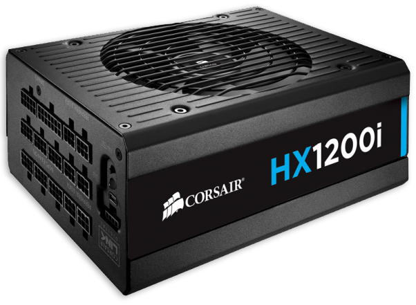 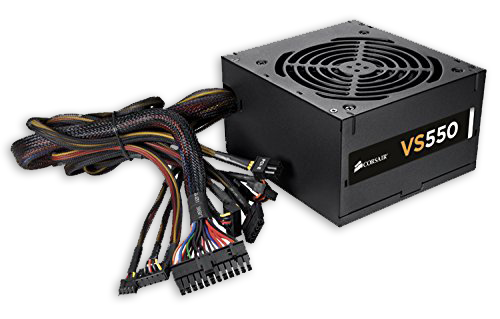
3. Motherboard parts
-
When you get started on the motherboard, you can help yourself by putting the motherboard on top of the box I comes in as you want to be as careful as you can. Any hard surface can make scratches that can be expensive.
- CPU
- RAM
The parts you need to put on the motherboard for now is:
The CPU has a little golden marker, that needs to fit with the motherboard.
When the you are putting in the ram in, two locks will lock the stick in place automatically.
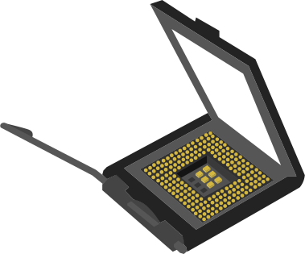

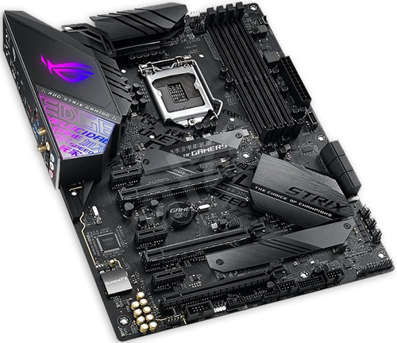
4. Mounting motherboard
At this point, it would be easiest to lay down your case on its side. Now with the parts fitted to the board, it needs to go in the case.
In the case, you will find a screw bumps that are meant to fit the board on top of with screws. In most cases the PCIE slots should be towards the bottom of the case.
The cables from the PSU for the board and CPU can now be connected. The boards cable socket is often very long (24pins) and is often placed near the edge of the board, and the CPU cable socket is often medium seized (8pins) and is often placed near the CPU socket.
If you have any case fans, now would be the time to connect them. Often, they are connected with small wires to the board itself, to the CHA FAN (chassis fan) pins.
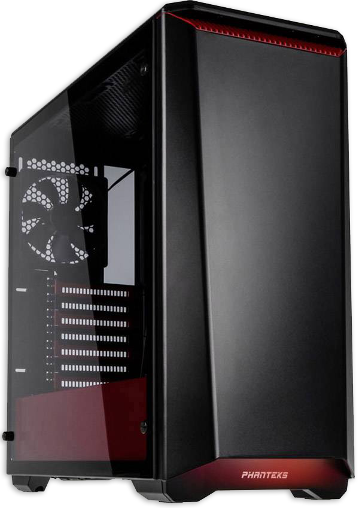
5. Cpu fan
When the board is placed in the case, the CPU Cooler can be mounted on top of the CPU. Depending on how big the cooler is, patience is needed.
Sometimes it can be easier to connect the cooler before mounting it.
Some cooler comes with pre-fitted cooling paste. If not, you will gently need to put a little bit on the cooler surface. A good portion in the middle will automatically be spread out when the cooler is mounted on the CPU.
The cooler will have to be mounted on the mounting screws around the CPU socket itself.
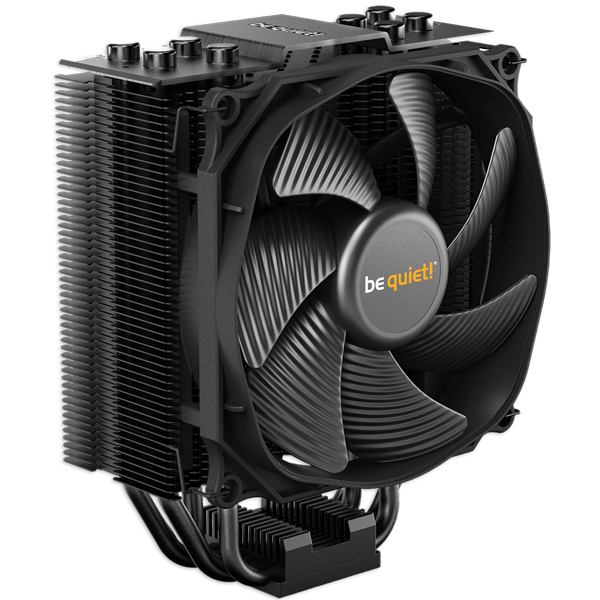
6. Graphics card
he graphics card must be put in the long PCIE port at the bottom. It can only be placed correctly, as the output ports has to fit to the back of the case.
After that, the power cable can be put into the card.
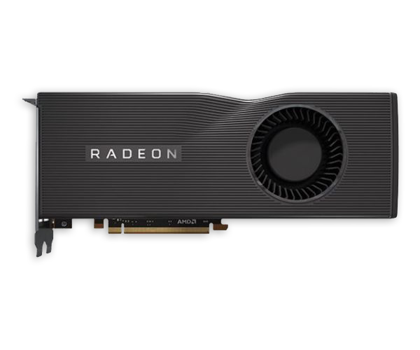 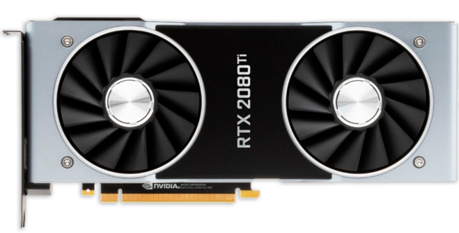
7. Storage
At last the storage device(s) can be placed. For HDD drives, its best to be in a fixed holder as it is fragile.
SSDs can be placed in holders to, but are nowhere near as fragile, and can be placed outside of a holder if there are no other options. For SSDs its more for the look.
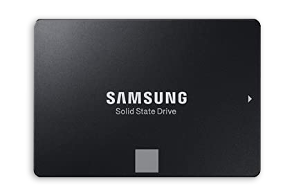 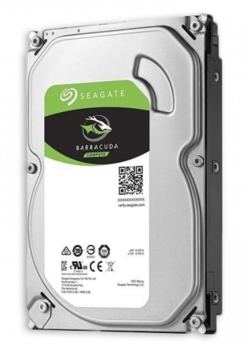
8. Boot up
You should now be ready couple the computer to a screen and power. If all fans and lights seem to be working, that’s the first good sign.
You will require at least a keyboard to interact with the menus and buttons on screen.
Troubleshoot
If your power button from start doesn’t do anything, it could be that you either didn’t connect the buttons wire, or that connected it wrong.
If you fan(s) isn’t spinning, I might be a faulty wiring.
If your CPU fan isn’t running, you must turn of the system as quick as possible. When the system is disconnected from power, check the fan wiring.
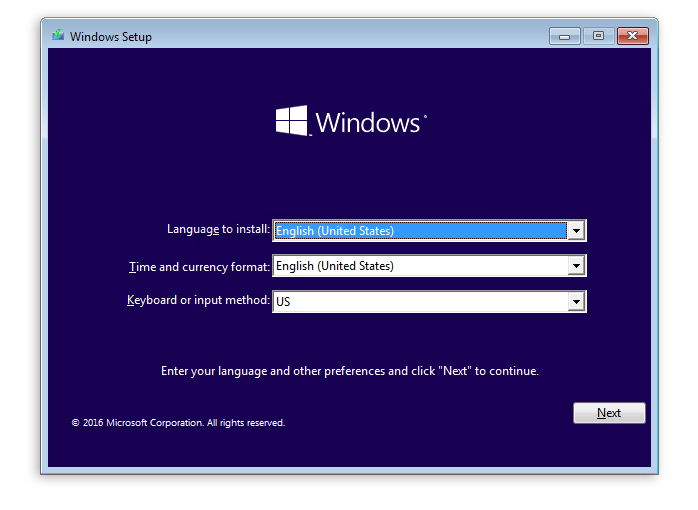